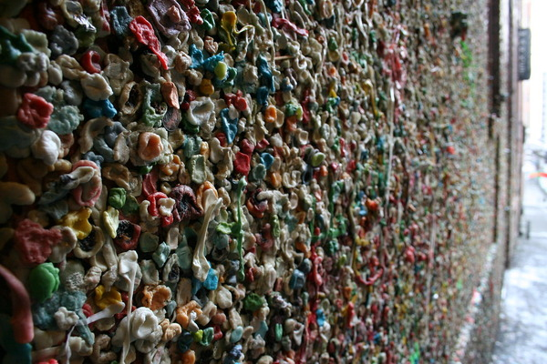

The gum wall, for as disguisting as it is, is a must see. The alleway the wall is located on is plastered in countless pieces of used chewing gum. A tradition has been made for visitors to contribute their own piece to the wall. While most find this disguisting it is hard to argue how strangely beautiful the place is. I personally have donated many pieces of gum and I am proud to say it.
